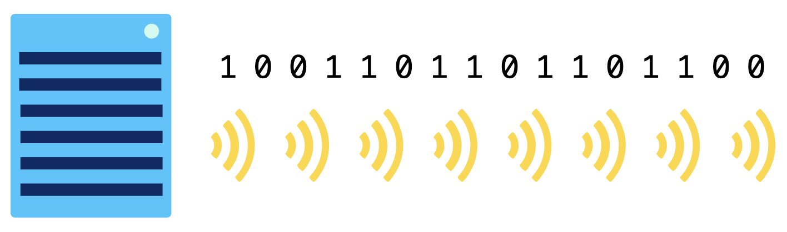

How does the Internet Work?
Internet
The Internet is the collection of computers that can communicate with one another using TCP/IP over an open, global communications network. The Internet is the world's largest computer network. Whenever computing devices are connected together in a network, they need protocols to communicate with each other. If the devices want to communicate over the Internet, they must use Internet networking protocols.
Millions of computers around the world are connected by cables, fiber, and wireless links. We use the Internet to read blogs, watch videos, send emails, and download pictures and music. But how does the Internet work?
TCP/IP
A computer communication protocol is a detailed specification of how communication between two computers will be carried out in order to serve some purpose. Communications between computers on a network is done through protocol.TCP/IP (Transmission Control Protocol/Internet Protocol) is the fundamental communication protocol for the Internet. TCP/IP is a set of communication protocols used to connect devices on the internet and local networks. It defines how data should be packetized, addressed, transmitted, routed, and received. TCP handles error-checking and data integrity, while IP manages addressing and routing.
TCP/IP is normally considered to be a 4-layer system. The 4 layers are as follows:
- ★ Application layer
- ★ Transport layer
- ★ Network layer
- ★ Data link layer
1. Application layer
The application layer is the topmost layer of the TCP/IP protocol suite. The Application layer is responsible for enabling communication between users and network services. It provides an interface for applications to send and receive data over the network. The application layer uses different protocols to complete the requests for different programs. Some of the protocols used by the application layer include :
- HyperText Transfer Protocol (HTTP): Used for web browsing
- File Transfer Protocol (FTP): For transferring files between computers
- Simple Mail Transfer Protocol (SMTP): For sending emails
- Secure File Transfer Protocol (SFTP): For secure file transfers over SSH
2. Transport layer
The application layer sends the data to the lower layer, i.e. the transport layer. The transport layer converts the data into data packets and sends to the destination device. The transport layer uses the Transmission Control Protocol (TCP) and the User Datagram Protocol (UDP).
TCP is the data transport protocol that's most commonly used on top of IP and it includes strategies for packet ordering, retransmission, and data integrity, which ensures reliable, ordered, and error-checked delivery of data. TCP is best used for direct communication in which a reliable connection is needed, such as web browsing, email, text messaging, and file transfers.
UDP is an alternative protocol that solves fewer problems but offers faster data transport, which provides faster, connectionless communication without reliability guarantees. UDP is best used for live and real-time data transmission when speed is more important than reliability, such as live streaming, online gaming, and voice-over-IP (VoIP).
When the transport layer receives data from the application layer, it is transformed into the data packets : Everything transmissed on the Internet involves packets. For example, every Web page that you receive comes as a series of packets, and every e-mail you send leaves as a series of packets. Networks that ship data around in small packets are called packet switched networks .

The TCP and UDP add a header to the data packets. The TCP header contains different fields like source and destination port information; packet sequence number, acknowledgment information, and checksum values. Each field plays its role when data packets are exchanged. For example, the checksum field is used to check if any packet during the data exchange process has been tampered or not. The sequence number tells the TCP at the destination about the order of the packet. The TCP at the receiver end combines the packets in the correct order with the help of the sequence numbers. When a packet is successfully transferred, the devices acknowledge the successful delivery of the packets. If the sender does not receive an acknowledgment by the receiver in a specified period of time or window, it resends the packet. The entire packets at the receiver end are arranged into the correct order; the headers are removed from the packets before reassembling them into a complete message.
Figure: Packet Format
3. Network Layer
This layer is also known as the Internet layer. The Network Layer is responsible for routing data packets across different networks to their destination. It handles logical addressing using IP addresses and ensures data can travel from the source to the target device, even across multiple networks.
The data packets from the transport layer travel down to the network layer. Different protocols operate at the network layer including Internet Protocol (IP), Internet Control Message Protocol (ICMP), and Address Resolution Protocol (ARP).
ICMP (Internet Control Message Protocol) is a network layer protocol used for error reporting and diagnostic functions in an IP network. It helps devices communicate issues such as unreachable destinations, packet loss, and congestion. Unlike TCP or UDP, ICMP is not used for data transmission but for network troubleshooting and control. It is crucial for network health monitoring and issue resolution.
ARP (Address Resolution Protocol) operates at the network layer to map an IP address to a corresponding MAC (Media Access Control) address. When a device wants to communicate with another device on the same local network, it needs the recipient's MAC address. ARP helps by sending a broadcast request to all devices, asking "Who has this IP?" The device with the matching IP responds with its MAC address. This process ensures data is sent to the correct physical hardware address within a local network.
At the network layer, a header called IP header is added to the data packet. The IP header contains the source and destination IP address. The packet is sent out to the destination via a router. The router contains a table containing IP addresses of different hosts including the gateway devices (other routers). The router checks if the destination IP address matches with the IP address saved in the table. If the router fails to locate the destination IP address, it sends the data packets to the other router device. The process continues until the packet reaches the destination.
The packet will be transferred along with the source and destination IP addresses and some other header information, such as the length of the data. If the destination computer is on the same local network as the source, then the packet will be directly sent to the destination via this network. If the destination is on another network, the packet will be sent to a gateway, which is a device that is connected to the source computer’s network as well as to at least one other network. The gateway will select a computer on one of the other networks to which it is attached and send the packet onto that computer. This process will continue, with the packet going through perhaps a dozen or more hops, until the packet reaches the destination computer.
Figure: IP Layer
- ★ IPv4 (Internet Protocol version 4) , the first version ever used on the Internet
- ★ IPv6 (Internet Protocol version 6) , a backwards-compatible successor
In the IPv4 protocol, IP addresses look like this: 74.125.20.113
Each IP address is split into 4 numbers, and each of those numbers can range from 0 to 255: [0-255].[0-255].[0-255].[0-255]
We write those numbers in decimal, but the computer stores them in binary, like so: 01010101 01010101 01010101 01010101
Each number can represent 28 values, Overall, that's 232 possible values: 4,294,967,296 (~4.3 billion) possible IPv4 addresses.
When it became obvious in the 1990s that the IPv4 addresses were running out, the IPv6 protocol was proposed with a much longer addressing scheme.
Here's an IPv6 address: 2001:0db8:0000:0042:0000:8a2e:0370:7334
Notice the letters in those numbers, like d and b? Those are hexadecimal numbers, hexadecimal is a numbering system with base 16 (0, 1, 2, 3, 4, 5, 6, 7, 8, 9, A, B, C, D, E, F).
There are 8 hexadecimal numbers in IPv6 address, and each number is 4 digits long. The highest value for each number is FFFF, since F is the highest digit in hexadecimal.
Thus, the highest address would look like: FFFF:FFFF:FFFF:FFFF:FFFF:FFFF:FFFF:FFFF
In total, each IPv6 address is represented by 128-bit, so there are 2128 possible IPv6 addresses.
That's 340340340 undecillion: 340,282,366,920,938,000,000,000,000,000,000,000,000 (virtually unlimited)
IPv4 address hierarchy:
Both IPv4 and IPv6 addresses are hierarchical. For simplicity, let's examine the hierarchy of IP v4 addresses.Consider this IP address: 24.147.242.217
That IP address could be broken down into these 2 parts:
The first two octets (16 bits) identifies a network administered by the Comcast (an Internet Service Provider). The last two octets (the final 16 bits) identifies a home computer on that Comcast network.
If the last two octets were different, then the IP address would point at a different computer on the Comcast network. If the first two octets were different, then the IP address might belong to a completely different network administrator. The Internet Protocol uses this hierarchical addressing scheme to make it easier to route messages from source to destination. Once a message arrives at the network, a network router can take care of sending it to the individual node.
Question: What's your IP address?
4. Data Link Layer
The Data Link Layer is responsible for enabling reliable communication between devices on the same physical network. It handles framing, addressing (using MAC addresses), error detection, and access control to ensure data is delivered correctly across the local network. The data link layer is subdivided into three layers:
- Logic Link Control (LLC)
- Media Access Control (MAC) Layer
- Physical Layer
The MAC layer adds the source and destination MAC address to the data frames.
The physical layer converts the data frames into a format that can be transmitted over the network. For instance, the physical layer converts the data frames into electrical signals if the path is wired. Similarly, the data frames are converted into electromagnetic waves for wireless communication medium. The aforementioned layers work conversely at the receiving end. The electric signals or electromagnetic waves are converted back into data frames, the headers are removed from the packets; finally, the packets are reassembled into complete data.
Physical network connections:
The Internet is a network of computers connected to each other. But what does each physical connection look like? It depends on the needs of the connection and the size of the network.- Copper cables If you're in a computer lab or near a modem, you can probably find a cable similar to this one:
- Fiber-optic cables A fiber-optic cable contains an optical fiber that can carry light (instead of electricity). The fiber is coated with plastic layers and sheathed in a protective tube to protect it from the environment.
- Wireless Wireless connections don't involve any wiring. A wireless card inside the computer turns binary data into radio waves and transmits them through the air:

This is a type of twisted pair cable, twisted pair cables send data through a network by transmitting pulses of electricity that represent binary data:
To make sure cables are transmitting information in a way that can be understood by the recipient, they follow the Ethernet standards. That's why twisted pair cables are commonly known as Ethernet cables. They are used both in networks as small as a company office (a LAN) or as large as an entire country (a WAN).
Fiber-optic cables communicate by sending pulses of light that represent binary data:
They typically also follow the Ethernet standards to make sure they're sending data in a way that can be commonly understood by any recipient in the network. Fiber-optic cables are capable of transmitting much more data per second than copper cables. They're often used to connect networks across oceans so that data can travel quickly around the world. As fiber-optic cables become less expensive, they're becoming increasingly common in city-wide networks as well.

Those radio waves can't travel very far: 75-100 feet in a place like an office building that's filled with all sorts of obstacles, or up to 1000 feet in a wide open field. The waves are hopefully picked up by a wireless access point which converts them from radio waves back into binary data. Wireless access points are connected to the rest of the network using physical wiring, like copper or fiber-optic cables. Wireless connections are limited in how much area they can cover, but they are increasingly commonplace due to the prevalent use of portable computing devices.
At any given time, our Internet connection might be using a combination of those technologies. Maybe we're using WiFi to connect to our home router, our home router is using twisted pair copper cables to connect to the metropolitan network, and those cables are hopping over fiber to communicate with overseas data centers. Each technology has both advantages and disadvantages:
Bit rate:
All of the computing devices on the Internet are communicating in binary. Whether they are connected via wired or wireless, they are sending electromagnetic signals that represent streams of 1s and 0s. Network connections can send bits very fast. We measure that speed using the bit rate, the number of bits of data that are sent each second.The earliest Internet connections were just 75 bps (bits per second). These days, connections are more often measured in Mbps (megabits per second).
| Unit | Number of bits | |
|---|---|---|
| kilobit | 1000 | 1 thousand |
| megabit | 10002 | 1 Million |
| gigabit | 10003 | 1 Billion |
| terabit | 10004 | 1 Trillion |
| petabit | 10005 | 1 Quadrillion |
Bandwidth
We use the term bandwidth to describe the maximum bit rate of a system. If a network connection has a bandwidth of 100 Mbps, which means it can't transfer more than 100 megabits per second. Ever heard the term "broadband Internet"? That refers to a connection with a minimum bandwidth that requires a minimum of 25 Mbps download and 3 Mbps upload speeds. That's enough bandwidth for basic Internet use like checking emails, reading websites, streaming, and video calls.Latency
Another way to measure the speed of a computer network is latency. latency is the time between the sending of a data message and the receiving of that message, measured in milliseconds:Internet speed
Speed is a combination of bandwidth and latency. You can measure the current speed of a network using an Internet speed test: a website that downloads and uploads data while tracking how quickly the data is transferred. Here are the results from an Internet speed test from my laptop:Internet providers often support a much faster download speed than upload speed, because Internet users spend much more time downloading data (reading articles, watching movies) than uploading data (writing blog posts, submitting forms).
Question: What's the speed of your Internet connection?
TCP/IP Layers Diagram
Exercise
1.
The following is the binary notation and dotted-decimal notation form of a 32-bit IPv4 address:- a. 10000001 00001011 00001011 11101111
- b. 11000001 10000011 00011011 11111111
Please Change the following IPv4 addresses from dotted-decimal notation to binary notation:
- a. 111.56.45.78
- b. 221.34.7.82
2.
Please find the error, if any, in the following IPv4 address:- a. 111.56.045.78
- b. 221.34.7.8.20
- c. 75.45.301.14
- d. 11100010.23.14.67
3.
Please identify whether each address below is IPv4, IPv6, or invalid:- a. 119.67.44.86
- b. 94.49.190.138
- c. 258.151.50.253
- d. e0f8:af58:eee6:52b
- e. d938:2da7:b596:6d34:3970:6789:c941:2340
- f. d938:2da7:b596:6d3:3970:6789
4.
There is a large difference in IPv6 adoption across the world. These are the IPv6 adoption rates of the top 5 most populated countries, as of 2023:| Country | Adoption Rate % |
|---|---|
| India | 78% |
| United States | 50% |
| China | 50% |
| Indonesia | 13.5% |
| Pakistan | 8.6% |
Why is it important to encourage countries and their Internet Service Providers to upgrade to IPv6?
- a. If a country's ISPs don't adopt IPv6, their Internet connections will never be as fast a other countries.
- b. If a country's ISPs don't adopt IPv6, their Internet connections won't be able to download large files.
- c. If a country's ISPs don't adopt IPv6, they may run out of addresses when too many devieces want to use the Internet in their country.
- d. If a country's ISPs don't adopt IPv6, other countries will no longer be able to access the websites hosted on the old IPv4 addresses.
Reference
- https://www.thegeekstuff.com/2011/11/tcp-ip-fundamentals/
- https://www.iplocation.net/tcp-ip
- https://www.khanacademy.org/computing/computers-and-internet/
- https://www.ccnablog.com/network-layer/
- http://www.tcpipguide.com/free/t_DataLinkLayerLayer2.htm
- https://www.savespendsplurge.com/fun-math-for-kids-how-to-teach-children-binary-and-decimal-numbers-easily/
- https://www.splashlearn.com/math-vocabulary/decimal-to-binary